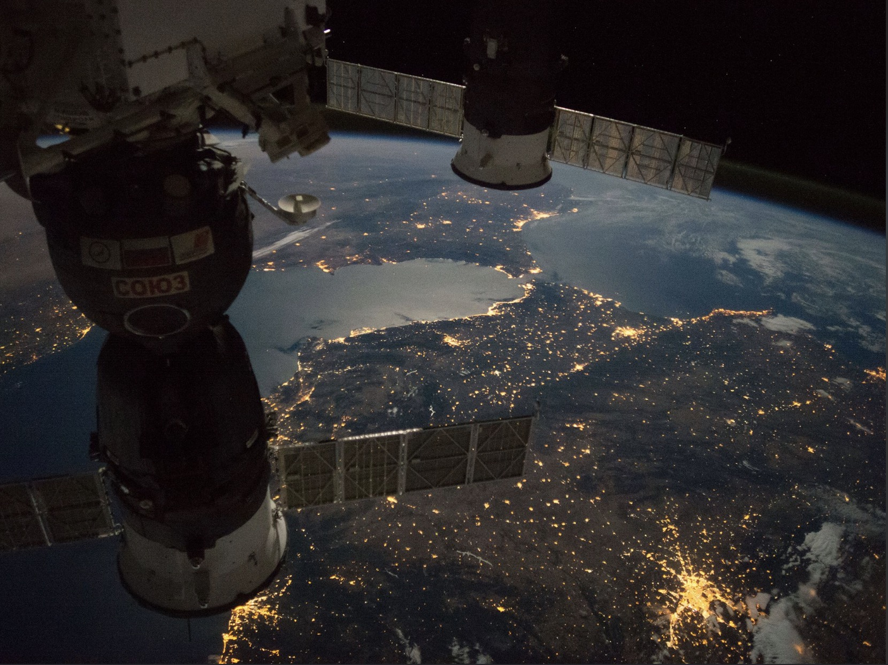

Aerospace Perspective
We approach agriculture through the lens of Earth observation, remote sensing and engineering.
 AGROSPACE XCELNASA SPACE APPS CHALLENGE 2026
AGROSPACE XCELNASA SPACE APPS CHALLENGE 2026

NASA SPACE APPS CHALLENGE 2026 · FIELD SHIFT
We are AgroSpace Xcel — a team of 5 first-year Aerospace Engineering students from Universiti Sains Malaysia (USM), building FieldShift to turn Earth-observation signals into clearer agricultural decisions.
Five first-year Aerospace Engineering students at Universiti Sains Malaysia, using an aerospace perspective to explore how satellite and environmental data can support farmers facing unpredictable weather.
WHO WE ARE / 02
We are a group of five students from the School of Aerospace Engineering, Universiti Sains Malaysia. For us, aerospace is not only about aircraft and space — it is also about using technology and observation to understand our planet.
We approach agriculture through the lens of Earth observation, remote sensing and engineering.
FieldShift is our prototype — built by five first-year students learning, testing and iterating together.
We focus on making environmental signals understandable enough to support practical monitoring.
FIELDSHIFT / 03
Click anywhere on the map. The selected location, coordinates and prototype indicators update for that point.
OUR APPROACH / 04
Choose a location on the interactive map.
Review environmental indicators for that point.
Translate the signals into understandable conditions and reasons.
Use the information to decide what should be monitored next.
WHY FIELDSHIFT
The dashboard responds to the point selected on the map.
Indicators are paired with plain-language reasoning instead of isolated scores.
The prototype turns signals into monitoring guidance for the next step.